Warhammer: End Times - Vermintide
Warhammer Fantasy (WHF), marcă aflată în proprietatea Games Workshop (GW), are o istorie de aproape patru decenii în domeniul jocurilor de strategie tabletop și al RPG-urilor pen & paper. Prezența sa în mediul virtual este semnificativ mai modestă și începe să capete impuls abia după anul 2000. Este totuși interesant de remarcat că primul joc video ce poartă marca WH, anume Warhammer: Shadow of the Horned Rat (SHR), datează din 1995. Exact douăzeci de ani mai tîrziu, în 2015, un grup suedez destul de obscur, Fatshark (FS), avînd o oarecare experiență în domeniul jocurilor multiplayer, lansează Vermintide (VT) fără prea mare fanfară. Acesta ajunge pînă la urmă la vînzări de cîteva milioane de copii pe diverse canale de distribuție, și chiar dacă prezența sa în umbra Celui Cornut poate fi o pură întîmplare, nu putem să nu ne întrebăm dacă nu cumva o fi mai mult de atît în acest aliniament fatidic. Asta deoarece VT nu este atît un joc cît mai degrabă o experiență. O călătorie prin tărîmuri de vis și coșmar, ce este atît cu mult înaintea vremurilor în felul în care abordează teme narative și mecanici fundamentale, cît și mult înapoi. În sensul că VT are mai degrabă aerul unei experiențe construite de amorul artei și pentru satisfacția lucrului bine făcut, decât cu scopul loviturii centrate în ținta de profit sau optimizarea schemei de creștere a veniturilor. Vă veți întreba ce-i cu atîtea superlative pentru un joc despre pocnit muride la temelie. Păi să vă explic.
The world is ending, though few believe it… - spaimă mai veche decît păcatul, acum în ediție milenară
Din însorita Tilea vin multe snoave năstrușnice, menite să-i amuze negustorii pe seama celor poate prea naivi și de credință șovăielnică. Una dintre aceste istorisiri, pe atît de ridicolă pe cît de macabră, spune că acum multă vreme oameni și bărbi-lungi trăiau împreună într-un singur oraș, poate cel mai vechi și mare din cîte s-au cunoscut, clădit de mîini mai iscusite în negurile timpului. Ținînd de obiceiurile locuitorilor săi, așezămîntul se întindea atît sub cer cît și sub pămînt. În adîncuri, piticii săpau galerii și săli pe măsura strămoșilor. Deasupra, oamenii semănau recolte întinse asemenea unei pături de aur.
Atît de plăcută era viața încît, pentru a mulțumi zeilor ce-i acoperiseră cu bunăstare, oamenii au ales să ridice un templu cum nu se mai văzuse: o clădire impunătoare în piața centrală, iar deasupra ei, un turn de piatră albă care să atingă cerul. După multă planificare și cu ajutor primit din partea arhitecților pitici, s-au înhămat la sarcina măreață. Săptămînile au devenit luni, apoi ani, iar oamenii tot clădeau la edificiu. Sfîrșeau munca bătrîni și istoviți, lăsînd copiilor sarcina să le ducă visul mai departe, sub dogoarea verii și gerul iernii.
După multe generații, au început în sfîrșit să ridice turnul. Ani mai tîrziu, acesta devenise atît de înalt încît oamenilor le era tot mai greu să care piatra pînă sus. Într-un final, s-au poticnit atît de mult încît părea că nu-l vor termina niciodată. Atunci s-a întîmplat ca printre ei să sosească un pribeag în straie cenușii, ce s-a oferit să-i ajute. A cerut un singur lucru în schimb și le-a promis că, dacă îl va primi, le va termina turnul într-o singură noapte. Oamenii s-au învoit să-l asculte și au fost surprinși de modestia cererii lui: tot ce dorea era să poată adăuga la edificiu o mică ofrandă către zeul său. Astfel au căzut la înțelegere, iar la amurg pribeagul a intrat în templu și le-a zis oamenilor să se încuie în case, de unde să revină la miezul nopții. Din depărtare, nori s-au întins peste răsăritul celor două luni, acoperind clădirea în penumbră. La ora stabilită, locuitorii s-au adunat din nou în piață; un vînt tăios s-a pornit, limpezind cerul pentru privirile ce s-au ridicat spre turn. Se înălța ca o lance albă străpungînd bolta, vîrful ei fiind încununat cu un clopot imens, gravat cu rune bizare și încastrat în coarne de bronz. Lucea nemișcat sub cele două luni, iar pribeagul era de negăsit.

Oamenii s-au bucurat cînd au văzut dorința străbunilor împlinită și au vrut să intre în templu. Dar, chiar cînd i-au pășit treptele, clopotul s-a urnit. A bătut o dată, de două ori, de trei ori, făcîndu-i să tresară, să dea înapoi speriați și să-și ducă mîinile la urechi. A bătut de patru ori, de cinci ori, de șase ori, răscolind adînc în pământ și în oasele celor adunați sub el. A bătut de șapte ori, de opt ori, de nouă ori, purtînd pe undele sale gînduri negre; a bătut a ruină de zece ori, de unsprezece ori, de douăsprezece ori. La a treisprezecea bătaie, fulgere au despicat bolta, iar tunetele au cutremurat-o până la orizont. În urma lor s-a lăsat o liniște adîncă, peste care se înălțau coarnele clopotului. În cuprinsul lor ședea luna rea, neasemuit de mare și radiantă. Sub lumina ei rece, oamenii s-au îngrozit, au fugit și s-au închis in case, tulburați de semnele la care au fost martori. În zori au găsit tenebrele întîrziind în orașul lor. Nori precum cenușa răvăşită învolburau peste acoperișuri, iar din ei s-a pornit o ploaie uleioasă, ce-a năclăit străzile în bălți lucind cu iridescențe tulburi.
La început, cei curajoși și-au regăsit cumpătul. După cum spunea înțelepciunea piticilor, ploaia-i ploaie. O ignori și trece. Cu siguranță vremea avea să se limpezească, lăsîndu-i să se întoarcă la treburile lor. Numai că nu a fost așa. Vîntul s-a întețit, iar trăsnetele au scuturat turnul. Zilele s-au adunat în săptămîni, și ploaia nu s-a mai oprit. În fiecare noapte, clopotul bătea de treisprezece ori, iar dimineața negura se întindea peste oraș. Atunci, oamenii au început să se teamă și s-au rugat către zeii lor, dar nici măcar asta nu a domolit furtuna. Norii au rămas atîrnînd greu peste cîmpurile cu recolte distruse. Locuitorii s-au dus apoi la pitici, căutînd sprijin. Bărbile-lungi n-au fost prea interesate de problemă, căci ce conta puțină ploaie la suprafață? În adîncuri era cald și uscat. Astfel, oamenii s-au întors zgribuliți la casele lor, cu inimile roase de temeri. Au trimis călăreți în depărtări, dar niciunul nu s-a mai întors. Au vrut să-și sacrifice proviziile la templu, pentru a îmbuna zeii, dar l-au găsit ferecat. Ploaia a căzut și mai tare, devenind o grindină care a spulberat ce mai rămăsese din holde. Iar peste toate, clopotul a continuat să bată de cîte treisprezece ori, noapte după noapte.
La scurtă vreme stînci întregi s-au prăvălit din ceruri, zdrobindu-le casele. Mulți s-au îmbolnăvit și s-au stins fără vreo cauză aparentă, iar femeile al căror soroc venise au adus pe lume prunci strîmbi și pociți. De nicăieri au apărut șobolanii şi au devorat resturile din grînare, iar oamenii au început să înfometeze. Și-au trimis din nou înțelepții la pitici, de data asta pentru a le cere în mod imperios ajutorul. Doreau să se mute în subterane alături de ei și doreau mîncare. Piticii și-au pierdut imediat răbdarea, căci galeriile inferioare fuseseră inundate, iar șobolanii dăduseră iama și în cămările lor. Abia mai aveau adăpost și provizii pentru semeni. Au sfîrșit prin a-i izgoni pe oameni și au încuiat porțile.
În ruinele de la suprafață, zilele au devenit tot mai sordide. Locuitorii pierduți au căutat alinare din partea celor patru frați de la miazănoapte și le-au șoptit numele întunecate. Drept răspuns, șobolanii au revenit, mai mari și mai agresivi ca înainte. Blănile lor se strecurau printre rămășițele orașului în căutarea celor căzuți sau prea slabi pentru a se apăra. Cei rămași în viață au ajuns să trăiască vînați, căutînd mereu adăpost de haitele neobosite. La sfîrșit, ultimii supraviețuitori au ridicat arme de strînsură și s-au dus din nou peste pitici, determinați să rămînă în subteran sau să-i tragă de bărbi și să-i aducă printre ei. Bătăile în porți nu au primit niciun răspuns, astfel că oamenii s-au urnit, le-au dărîmat și au privit în tunelurile ce se întindeau dincolo de ele, întunecate și goale. Îndîrjiți, au început să coboare. În sălile unde pîlpîiau ultimele făclii, i-au găsit pe stăpînii adîncurilor. Mai rămăseseră din ei câteva fragmente de oase și zdrențe. Dincolo de ele, din toate ungherele au mijit ochișori roșii, sticlind flămînzi. Oamenii s-au adunat spate în spate și, spre cinstea lor, au luptat. Unii cu nădejde, alții cu disperare, dar nimic nu i-a putut ajuta în fața numărului și ferocității cu care au fost copleșiți. Valul de șobolani i-a măturat unul cîte unul, trăgîndu-i la pămînt, rupîndu-i în bucăți, scufundîndu-le ultimele țipete în chițăieli și scrîșnetul oaselor sfărîmate.
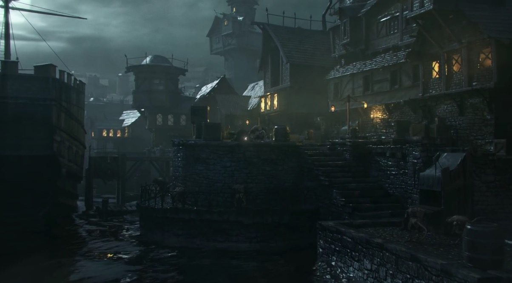
Asta spune povestea negustorească, dar cine să o creadă? De secole, Imperiul a rezistat dîrz în fața vrăjmașilor săi. Omenirea nu a întîlnit nicio amenințare care să nu fie îmblinzită de oțel, praf de pușcă și, mai presus de toate, de credința neîndoită în Sigmar Heldenhammer. Și totuși, nimeni nu a vorbit despre dușmanul străvechi ce se înalță din subterane, iar în curînd nici nu va mai avea cine.
Așa se face că în 2523 după Calendarul Imperial, într-o noapte de vise rele, o trăsură goneşte în Übersreik, orășel de provincie la marginea Reiklandului, aproape de Munţii Cenuşii. Diligenţa trage pe cheiul rîului Teufel, nu departe de cazarma străjerilor. Primul care coboară pare să fie un ofițer de armată care a trecut prin ceva tăvăleli la viața lui, îmbrăcat și tuns precum într-o versiune romanțată a unui Ev Mediu tîrziu. Lîngă el se ridică ditai bradul într-un parpalac negru, cu o pălărie înaltă și o figură de pocnesc operațiile; la dreapta lui, o femeie în straie vrăjitorești și cu mîinile încătușate, ce nu e deloc vexată de faptul că are flăcări în păr. Ceva mai în spate sunt urmăriți de o elfoaică ai cărei ochi parcă turnați din smoală se mijesc peste eșarfă și de un pitic mohorît. Pare că urmează să spună că îi e foame, ceea ce pe limba lui înseamnă că în primul rînd ar vrea o bere. Ofițerul se apropie de trupul unui paznic prăbușit în mijlocul drumului și îi inspectează rănile. Tipul în parpalac negru rămâne pentru o clipă nemișcat. Pe sub marginea pălăriei pare să ia toată dantura episcopiei în blestem. Apoi, se întoarce scurt și dă jos cătușele cucoanei, o nuanță discretă care se petrece în fundalul scenei.
O clipă mai tîrziu, șobolanii dau năvală, năpustindu-se de pe acoperişuri şi din ganguri. Ofiţerul îi contrează cu tehnici scoase direct din arta urbană pentru zweihander. Pălărierul îi îngroapă în plumb scăpărat din pistoale, iar piticul își regăsește buna dispoziție și începe să le împrăştie creierii pe caldarîm sub greutatea unui baros. Urmînd firea lucrurilor, elfoaica face chestiuni elfeşti, întrecîndu-se în acrobații în vreme ce despică beregate cu pumnalele și reutilizează în chip de pernuță pentru săgeți tot ce mișună contrar bunei rînduieli. Cucoana cu flăcări pe cap începe să rîdă ca nebuna şi dă drumul la un pîrjol cît strada, înteţit pe măsură ce mirosul de blană arsă se îngroaşă. Dintr-o alee lăturalnică, un cetățean în vîrstă tot face semne şi strigă după ei, iar la chemarea sa grupul se topeşte în noapte.
Această mică scenă este tot ceea ce VT oferă în materie de introducere, fixînd tonul grav în care universul WH este întruchipat. VT este pe alocuri un joc extrem de întunecat, trasat în tușe de un macabru visceral diluate cînd și cînd de puțin umor negru, de-o mică satiră sau de-o glumă de tavernă. Nu este un joc cu supereroi neclintiți în dîrzenia cu care înfruntă răul absolut, ci cu bieți aventurieri prinși în complotul celor mai năpăstuiți slujitori ai puterilor ruinoase. În ciuda auspiciilor sumbre și zilelor tot mai negre, printre greutăți și deznădejde aceștia găsesc curajul să mai și rîdă. Căci pînă la urmă, cui îi este frică de cîțiva șobolani?
When their backs turn, we go… - o biată auzenie, purtată de vîntul nopții pe străzi pustii
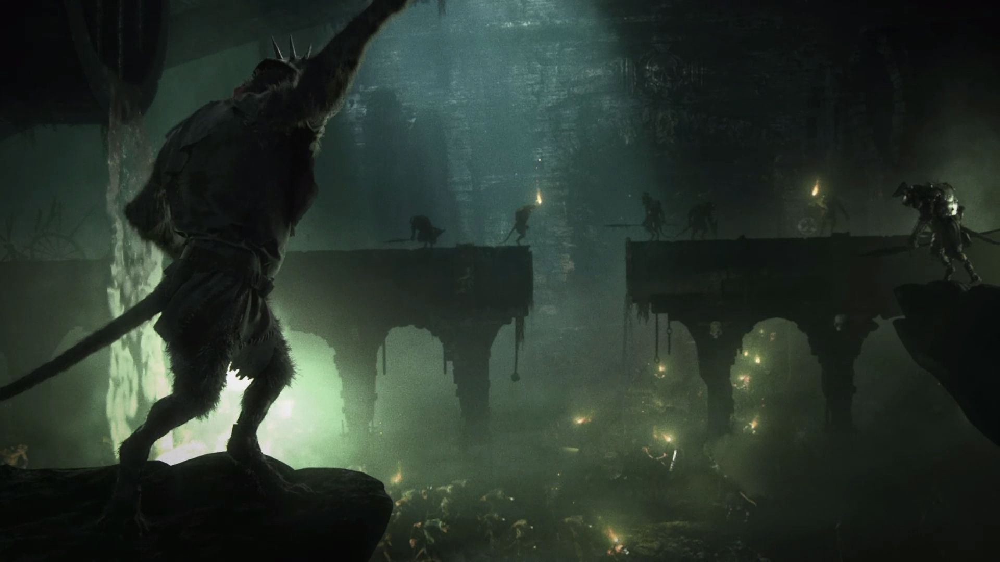
Uneori din lumină, dar mai ales din întuneric, șobolanii își vîră codițele în imaginarul uman încă din vremuri ancestrale. Desigur că ideea unor ticăloşi chiţăitori plămădiţi pe sfert, un fel de tirani ai subteranei care uneltesc la prăbuşirea civilizaţiei şi hegemonia şoricărimii, nu e o invenţie întru totul originală a GW. O referință destul de veche și comparabilă în spirit ţine de vremurile de pionierat ale genului sword & sorcery, anume de opera autorului american Fritz Leiber. În particular e vorba de seria de peripeții Fafhrd and the Gray Mouser, primele aventuri fiind publicate spre sfîrşitul anilor ‘30.
Ce se întîmplă în WHF, cel puţin în viziunea călugărilor lui Ulric (cult al iernii ce precede venirea lui Sigmar), e că unii dintre semenii noştri sunt atît de cuprinşi de pofte degradante încît pur şi simplu se împreunează cu animalele cîmpurilor. De pildă, cei care se trec pereche cu şerpi sau broaşte duc la zămislirea orcilor și a altor neamuri de piei verzi, cei care se ating de capre sunt responsabili pentru toate fiarele încornorate care bîntuie prin codri, iar cei care siluiesc oi sunt de vină pentru nivelul general de denaturare al populaţiei din Averland. Mai sunt şi cei care tîrăsc în păcat cîini şi pisici, ducînd la cea mai mare pacoste: şobolani antropomorfi, cunoscuţi sub numele de Skaven. Asta dacă nu cumva există o umbră de adevăr într-un mit și mai sinistru, anume că ticăloșii ar fi fost ridicați de bătaia unui clopot de bronz direct din puroiul mustind sub hybris.
În orice caz, aceştia sunt o rasă misterioasă de chinuiţi care forfotesc sub suprafaţa planetei, grupaţi în cete, triburi şi clanuri aflate într-un permanent conflict pentru resurse, de la mîncare, adăpost şi şoricioaice fertile pînă la un minereu dubios, probabil radioactiv și atins de influenţa Haosului, agentul care sapă în permanenţă la sfîrşirea lumii. Bătuți de soartă, incapabili de a progresa real ca civilizaţie în afara unor improvizaţii vremelnice, limitaţi în limbaj și gîndire, dar posedînd o viclenie perversă şi o îndemînare cum numai troglodiţii au pentru batjocorirea muncii altora, pîrliţii ăştia organizează lumea înconjurătoare în „chestii”: chestii cu blană, demne de o urmă de considerație, chestii fără blană, care nu merită nici măcar să le adulmece moscul stăpînilor, chestii piticeşti, bune de mîncat, chestii elfeşti sau chiar chestii omeneşti, niciuna dintre ele neavînd menire mai înaltă decît să ţină de foame sau să slujească.
Toate drumurile din subterane duc la Skavenblight, o născocire de coşmar ce adună sub bolta ei relele lumii, zvonită a fi fost cîndva un oraş măreţ, cu un templu impunător şi un turn alb ce ar fi atins cerul. Acolo îşi are lăcaș un consiliu de treisprezece scaune. Douăsprezece locuri sunt ţinute de şobolani de soi, cei atît de vicleni încît văd fenta de după fentă şi conspiraţiile ticluite în adîncurile altor conspiraţii. La nivel declarativ, ei ar trebui să conducă întregul neam spre victoria finală, dar în realitate fiecare este mai degrabă preocupat de sabotarea celorlalte căpetenii şi sporirea puterii sale peste șobolănime. Motivul pentru care labirintul de intrigi, uneltiri şi manevre oculte împotriva semenilor nu duce întreaga specie spre autodetonare ţine de cel de-al treisprezecelea scaun, păstrat simbolic pentru cel de care toţi, de la cea mai feroce căpetenie de clan pînă la ultimul şoricel, se tem. Pînă la urmă, tot cursul destinului împlinește voia singurului lor zeu, Marele Şobolan Cornut. El este stăpînul lumii subterane, reprezentînd tot ceea ce supușii lui sunt sau își doresc să fie. Totodată, este cel absent din realitate, dar le-a promis că vor împărăţi lumea la venirea sa.
Antagoniștii din VT sunt șobolanii clanului Fester, o grupare mai prăpădită, aflată sub stăpînirea marelui clan Pestilens. Conduși de un clarvăzător cenușiu ce și-a sărit complet din minți chiar și după standardele șobolănești, bandiții au erupt de sub Übersreik într-un puhoi îmblănit, puturos și dement, transformînd mare parte din oraș în scrum și mîncînd tot ce le-a căzut sub incisivi. Așa neisprăviți cum sunt, realizarea lor în VT este excelentă: niște bieți nefericiți, îmblăniți și cocoșati, tîrînd cîte-o codiță scîrboasă, duhnind a urină și alte secreții neplăcute, cu ochișori rourați și trăsături în chip de murid. Fricoși, se chircesc și tremură în așteptarea durerii dacă sunt prinși singuri de către eroi, pe cînd dacă rolurile se inversează e loc de mare bucurie între ei. Chițăieli, mînării isterice, îmbrînceli, competiție să vadă care înjunghie chestia mai bine acolo unde o doare cel mai tare.
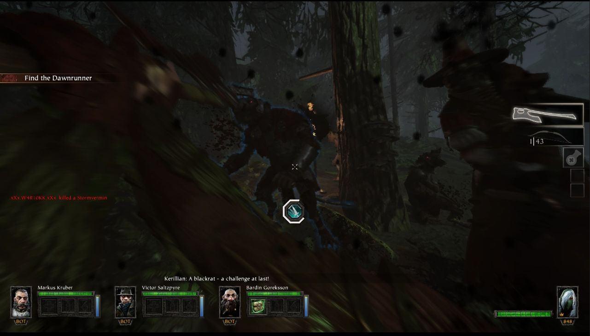
În versiunile timpurii ale jocului aceștia aveau un limbaj foarte colorat, obișnuind să batjocorească eroii în cele mai josnice feluri atunci cînd îi atacau din spate. Cîteva exemple care au rămas mărturie pe înregistrări sunt Quick-quick let’s stab the elf-hag! sau un tulburător de autentic You die now dwarf-thing! Piss on you I will! Asta printre alte porcării ce se întind spre zări tot mai sinistre. Din păcate, la cîteva luni după lansare toate aceste linii vorbite au dispărut o dată cu o actualizare a motorului audio. Motivul nu a fost explicat niciodată, dar se poate bănui că producătorii au dorit să mai relaxeze puțin atmosfera. Chiar temperați însă, șobolanii au rămas guralivi. A sta în preajma lor înseamnă a fi în permanenţă sub asaltul unor ameninţări stîlcite, pe de-o parte groteşti, pe de altă parte ridicole avînd în vedere abilităţile lor individuale. Chiar şi specimenele mari, cele pregătite de luptă, stîrnesc rîsul atunci cînd le sar mustăţile şi tuşesc piţigăiat un Hic! The things-the things are here-here! S-or crede ei războinici, dar tot vermină rămîn. Ce trebuie învățat repede e că foarte rar un şobolan va fi întîlnit pe cont propriu. În general sunt mulţi la un loc, iar amenințarea principală nu e nici măcar în haita din faţă, care se înfruptă dintr-un stîrv înainte să înjure ca din gura de canal şi să sară la bătaie. Cei mai mulţi vin mereu din flancuri, strecurîndu-se tăcuţi din cotloane şi lovind parşiveşte.
În VT e redat un număr destul des mic de unități specifice facțiunii șobolanilor. Alegerea e însă reprezentativă pentru felul în care aceștia își desfășoară campaniile și permite suprapunerea dinamică a amenințărilor de diverse feluri. Cei mai terminați sunt sclavii: șoricei raşi la piele, subjugaţi din clanuri mai slabe şi folosiţi drept carne de tun. Apar sub forma unor ambuscade, cînd după șușoteli ticăloase sau forfota gheruțelor trag un răcnet general şi năvălesc turbaţi din toate direcţiile, încercînd să-și copleșească inamicii. Altfel, mai pot veni puhoi și ca o hoardă, anume un tăvălug anunţat din vreme de vuietul unui corn de bătălie. Hoardele pot fi impresionante ca mărime, şuvoaie nestăvilite de şoricei căpiaţi ce răcnesc cît îi ţin plămînii despre înjunghiere şi moarte violentă, ruină şi venirea Celui Cornut. Spre deosebire de ambuscade, acestea de regulă se desfășoară dintr-o singură direcţie şi oferă aventurierilor răgazul să-şi organizeze defensiva. Grosul infanteriei ușoare este dat de șobolanii cafenii, luptătorii de rînd ai clanului, ceva mai zdraveni și mai rapizi decît sclavii. Ca și cei dintîi, mînuiesc arme vai de ele: suliţe primitive, făclii sau vreun pumnal jefuit. Populează nivelurile și sunt ocupați cu scurmatul printre ruine si cadavre, amușinatul prin te miri ce ganguri și fundături sau organizarea de mici haite ce vînează aventurierii. Sunt de o viclenie destul de ticăloasă, de multe ori lovind din spate exact cînd victimele lor sunt ocupate cu alte amenințări. Trebuie spus că ambii inamici, deși ușor de subestimat, pot fi extrem de parșivi. Tendința lor e mereu să-și înconjoare prada și să o copleșească într-o răbufnire violentă cînd se așteaptă mai puțin. E tentant să pornim hotărît spre o congregație de astfel de nemernici găsită în mijlocul unei ulițe, pregătiți să-i facem zob, numai ca să ne trezim că unul ne-a furat fața, iar în clipa de derută ceilalți au împuns la noi pînă ne-au făcut una cu pămîntul. Producătorii au reușit să simuleze foarte bine acest gen de cafteli de văgăună, cu un repertoriu întreg de manevre brăilene și perverse din tîrguri montane.
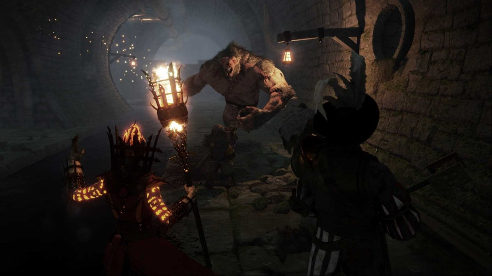
Infanteria grea este dată de șobolanii negri. Aceștia sunt îmbrăcaţi în cuirase prăduite din fortăreţe piticeşti şi mînuiesc halebarde ce pot culca la pămînt eroii dintr-o lovitură năprasnică. Şobolanii negri sunt extrem de periculoşi, armura lor anulînd complet efectele multor arme şi permiţindu-le să-şi execute loviturile fără să fie întrerupți de o eventuală ripostă. Pot fi întîlniți conducînd grupuri de șobolani cafenii, stînd de strajă în jurul unor puncte strategice sau uneori în cete foarte mari, sub forma unor patrule pentru care este valabil sfatul din bătrîni despre jumătatea mai bună a vitejiei. Cât despre infanteria monstruoasă, ea este reprezentată de șobolanul uriaș, a cărui prezență este mereu vestită de un răget adînc. Aceste nu este un Skaven autentic, ci un hibrid grefat laolaltă din diverse fiare prinse de șobolanii clanului Moulder. Este încarnarea brută a turbării, o namilă neobosită ce atacă mînată de foame și nebunie. Reprezintă un pericol mai ales prin haosul pe care îl provoacă. Dezorganizează apărarea eroilor, îi separă și îi aruncă de colo-colo, făcîndu-i o pradă ușoară pentru șobolanii mai mici.
Amenințarea recurentă este cea dată de specialiști, unități de suport și infiltrare înregimentate din rîndurile marilor clanuri. Aceștia sunt șobolanii care pot produce într-un timp scurt pierderi imense, dacă infanteria le permite să opereze nestingheriți. Pentru controlul cîmpului de luptă sunt folosiți doi șobolani ai clanului Skryre. Unul este îmbrăcat într-un costum de protecție antichimică și aruncă globuri de sticlă incărcate cu un amestec oribil. La contactul cu aerul, soluția formează un nor dens ce îi dezorientează pe cei aflați în cuprinsul său, le arde pielea și căile respiratorii. Celălalt este un șobolan negru protejat de o armură zdravană și înarmat cu o mitralieră Ratling. Precum orice invenție șobolănească, pornește greu și se blochează repede, dar cînd funcționează culcă la pămînt tot ce prinde în tir. Ultimele două unități sunt concepute pentru a incapacita fizic eroii. Șobolănoiul cu cîrlig este cel care de regulă manipulează lighioanele clanului Moulder, iar în VT este foarte vînjos și gonește țintit spre eroi. Cine nu dosește scăfîrlia este prins în cîrlig și tîrît departe de grup, de regulă printre rîndurile altor șobolani care chiuie de bucurie că pot lovi cu sete într-o victimă neajutorată. Dacă nefericitul încă nu este răpus, șobolănoiul îl va propti în cîrlig, ca să moară spînzurat, după care își va relua goana spre următoarea victimă. Adversarul emblematic pentru joc este asasinul clanului Eshin. Un șobolan micuț și tăcut ca moartea, acoperit cu o pelerină neagră și mînuind pumnale ce lucesc în tonuri de smarald. Acesta poate fi surprins cu coada ochiului sărind vreun gard sau printre acoperișuri în timp ce dă tîrcoale grupului. Este foarte răbdător și de regulă evită să pășească la vedere, înhămîndu-se la jocul așteptării dacă aventurierii se baricadează și au spinările acoperite. Se năpustește cu furie însă asupra unui spate descoperit, țintuidu-și victima la pămînt în timp ce-și vîră pumnalele în ea cu frenezie. Nici dacă este prins nu se lasă ușor. Fiind extrem de agil, e capabil să execute tumbe și sărituri care-i permit fie să preia inițiativa în luptă, fie să evadeze și să atace din nou la momentul oportun.
Comportamentul laş al șobolanilor, mizeria în care se scaldă şi voluptatea cu care se lasă pe vine peste oricine şi orice, de la chestii fără blană la divinități străine, ne ajută să învăţăm să-i urîm extrem de repede şi destul de pătimaş. Iar dacă stîrpirea lor nu e neapărat o faptă de nemaiauzită vitejie, rămîne un act de igienă elementară, atît morală cît şi fizică. De menționat aici satisfacţia teribilă dată de ţipetele jivinelor incinerate. O rapsodie a suferinței, balsam pentru suflet cum nici în templul Shallyei, zeiţa consolării, nu se găseşte. Prin felul în care sunt realizați, şobolanii din VT ocupă un loc de cinste în rîndul antagoniştilor cu personalitate şi sunt unul dintre elementele principale care păstrează farmecul jocului vreme îndelungată.
Do not trust in hope, it will betray you. Only faith and hatred sustains. - poveţe sănătoase, direct din aripa militantă a Bisericii lui Sigmar
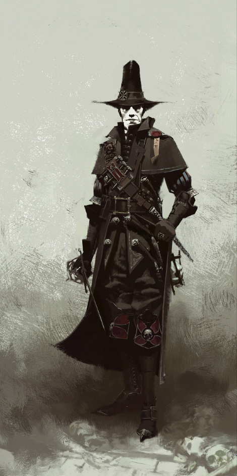
Între șobolani și planurile lor ticăloase stă o mînă destul de pestriță de aventurieri și cîteva personaje secundare. Creierul operațiunii este Franz Lohner. Un hangiu bătrîn, încă în putere, cu o personalitate voioasă, pragmatic și purtînd o mustață impresionantă, devine repede suspect prin priceperea cu care organizează rezistența și prin faptul că nu pare prins niciodată pe picior greșit cînd vine vorba de informații pe surse. FS au legat de el unele dintre cele mai frumoase referințe din joc; Herr Franz are dosit la cutie un scut ce poartă blazonul companiei cavalerești din bătrînul SHR și știe mult prea multe despre dedesupturile situației ca să nu fie implicat în măcar o organizație secretă, cu linie directă pînă la urechile Împăratului. Cealaltă figură recurentă este Olesya Pimenova, o cotoroanță ce vîră draci încinși în armăsarii diligenței atunci cînd trebuie să ducă aventurierii la adăpost, și o mînă cîștigătoare la orice joc de noroc.
În ceea ce-i privește pe eroi, liderul informal al grupului este Victor Saltzpyre. Un inchizitor care pășește pe marginea fanatismului, convins că Imperiul este putred pînă la măduvă și că menirea lui în calitate de biet slujitor al lui Sigmar este să stîrpească erezia pînă în ziua cînd oasele i se vor odihni în îmbrățișarea lui Morr. Primește bucuros vremurile negre, căci atunci cînd toate mîinile sunt împotriva lui, calea cea dreaptă devine cu atît mai limpede. Debutul aventurii îl găsește într-o situație destul de încurcată. Are parte de un sfîrșit de săptămînă aglomerat, ce implică un nobil ale cărui acte de corupție nu se rezumă doar la evaziune fiscală, o fiică aflată sub influența unui vampir cuibărit într-o mină întinată de Haos, și realizarea bruscă a faptului că șobolanii umblători nu sunt doar o poveste Tileană. Cum natura meseriei îl obligă să vadă conspirații în fiecare umbră, nu raportează descoperirea către structurile superioare, ci pornește o investigație clandestină sub pretextul escortării unei femei la judecată.
Femeia în cauză, Sienna Fuegonasus, este o practicantă nelicențiată a magiei și aproape complet subjugată lui Aqshy, taina vrăjitorească a conjurării focului. Neavînd răbdarea să parcurgă pașii lenți ai unei pregătiri temeinice, Sienna nu urmărește decît extazul resimțit cînd mînuiește taina întru invocarea unor flăcări mereu mai înalte. Și-a petrecut viața cutreierînd lumea, înregimentîndu-se în orice slujbă potrivită pentru porniri piromane. Intriga o găsește acuzată de uciderea unui nobil din vecinătatea lui Übersreik și de incendierea domeniului său. Din escorta ei spre judecată face parte și un fost ofițer al armatei imperiale, Markus Krüber. Originar din Übersreik, Markus și-a desfășurat cea mai mare parte a carierei la marginea Imperiului, în Ostland, unde a luptat împotriva mai tuturor vrăjmașilor omului, fie vorba de piei verzi, fiare cornute, barbari din nord sau morți umblători. Aproape s-a lăsat de ofițerie atunci cînd unitatea i-a fost consumată de soarele purpuriu invocat de un necromant, iar misiunea din Übersreik are un rol dublu: mai întîi să-i înlesnească întoarcerea în liniștea meleagurilor natale, iar apoi, presupunînd că produce o impresie pozitivă asupra lui Saltzpyre, să-i permită să se reinventeze în societatea imperială.
Veghetoarea Kerillian este o elfoaică ce păzea codrii din Athel Loren, tărîm aflat dincolo de Munții Cenușii. A fost exilată din motive la fel de misterioase precum chipul pe care-l ține ascuns după eșarfă, astfel că aventura o găsește în compania unor ființe pe care le consideră musculițe de primăvară cu pași grei precum buștenii. Tăcută, cu ochii purtînd întunericul unui blestem și ținînd socoteala fiecărui șobolan răpus, este iscodită îndelung de către Saltzpyre, inchizitorul nefiind sigur dacă venirea ei este un semn rău sau o dovadă a căilor întortocheate prin care Sigmar își ajută supușii. În fine, temerarul Bardin Goreksson e un pitic neobişnuit. Guraliv, prietenos cu alte neamuri şi plimbăreţ, își asumă rolul de iscoadă pentru fortărețele Munților Cenușii. Mereu cu un cîntec pregătit ocaziei (de regulă despre ultima redută împotriva tuturor sorților) și o poveste despre cum s-ar fi descurcat verișorul Okri sub auspicii și mai sumbre, prezența lui în diligenţa spre Übersreik are de-a face cu o misie piticească, inerent teribil de secretoasă, dar făcută pulbere de invazia şobolanilor.
Millenia of unadulterated evil, within every brick and stone. Adică Destination Paradis.
Pentru un titlu care nu are mari pretenții la o linie narativă consistentă pe parcursul său dincolo de cea legată de justificarea acţiunii imediate, greu se găsesc suficiente cuvinte de laudă la adresa volumului şi calităţii dialogurilor dintre toate aceste personaje, dialoguri care construiesc deopotrivă atmosfera jocului și istoriile lor personale. Sigur că o bună parte a discuțiilor servește un rol utilitar, ca să reducă la minim nevoia comunicării prin viu grai între jucători. Eroii pot semnala automat sau printr-o comandă simplă găsirea de provizii, prezenţa sau eliminarea unui inamic periculos, nevoia de ajutor şi aşa mai departe. Dincolo de asta, există o cantitate imensă de cuvîntări, uneori legate de specificul misiunii, alteori ţinînd de componenţa grupului în cursul acelei aventuri sau menite să umple un moment de linişte. Unele episoade încă stîrnesc rîsul deşi au fost auzite de multe ori, altele ne pun pe gînduri, iar ocazional răsare cîteo ramură suficient de grea încît să ne facă să privim lucurile într-o perspectivă ceva mai amplă. Înfloriturile și iscusința limbajului luate împreună cu scenele evocate în povestiri sunt elementele care menţin atît de bine iluzia unei lumi ce se întinde mult dincolo de frontierele nivelului jucat. Din punctul de vedere al construcţiei hărţilor, de multe ori ne aflăm într-un tunel îmbrăcat inteligent în elemente de decor ce îl fac să pară mai mult decît este, dar tot discuţiile sunt cele care ne induc cel mai bine ideea că sunt mult mai multe de văzut și de trăit dincolo de cărarea îngustă ce trebuie parcursă.
După cum deja se poate înțelege, fiecare personaj are interesele, temerile şi obsesiile sale, de multe ori pictate într-un jargon unic. Mîrîielile și ciondăneala sunt frecvente, dat fiind că grupul cooperează numai sub imperiul situației. Piticul (mic, jegos și gălăgios, cum ar spune unii) încă îi poartă pică elfoaicei pentru o ambuscadă petrecută cu un mileniu înaintea evenimentelor din VT. Inchizitorului îi sar în permanență cazanele din cauza companiei, căci o fi zis Sigmar să nu împușcăm pitici, dar la elfoaice și eretici e mînă liberă. Sergentul e fermecat de ochii misterioși, dar îi ține numai în șuturi pe cei mai mici de înălțime, și tot așa. Atît piticul cît şi elfoaica au fiecare un vocabular specific pentru insulte şi prăjeli; musculiţele de primăvară şi trimiterea în bolile caprelor de munte sunt printre cele mai ușoare dintre acestea. Limbajul colorat are în general contraste foarte inventive, iar de la plămînii lui Sigmar şi pînă la coiful radiant al Valayei (zeiţa piticească a vetrei), nimic nu e suficient de sacru încît să nu fie luat în deşert cînd lucrurile se încurcă mai rău decît codiţele de şoricei prinse în sevă.
În VT, moartea pîndeşte după fiecare colţ şi este interesantă înțelegerea viziunii celor care au trebuit să-i interpreteze venirea. Dan Mersh, de profesie actor de comedie şi vocea sergentului Krüber, a spus într-un interviu că liniile de dialog ce prevestesc iminenţa morţii au fost de departe cele mai dificile, implicînd un nivel extrem de emoţie şi de transpunere a sinelui în respectiva situaţie. Nu-i de mirare că nu e nici la îndemînă şi nici neapărat plăcută vizualizarea unui gang murdar și înjunghierea turbată de către şobolani schizoizi, şi de aceea credem că un set distinct de laude trebuie adus pentru vorbele personajelor ce calcă pragul morţii. Toţi se agaţă cu dinţii de ce au mai sfînt, cu tonuri dezbrăcate de orice urmă de speranţă într-o finalitate fericită. Uneori jură să moară cu ei de gît (în special cuvintele elfoaicei vor zbîrli pieile mai sensibile), alteori îşi deplîng soarta sau tuşesc cu sînge ultimele suflări. Desigur, nu mai e loc de glume cînd cineva ajunge mîncare pentru vermină. Interesante însă și vorbele supraviețuitorilor odată cu trecerea în neființă a unui camarad. Nu că le-ar trimite neapărat urări de bine, dar merită auzit ce cred cu adevărat unii despre alții.
Hah, there are vermin in Sigmar’s bowels!… What? - din cugetările lui Kerillian, la Ora Șobolanului
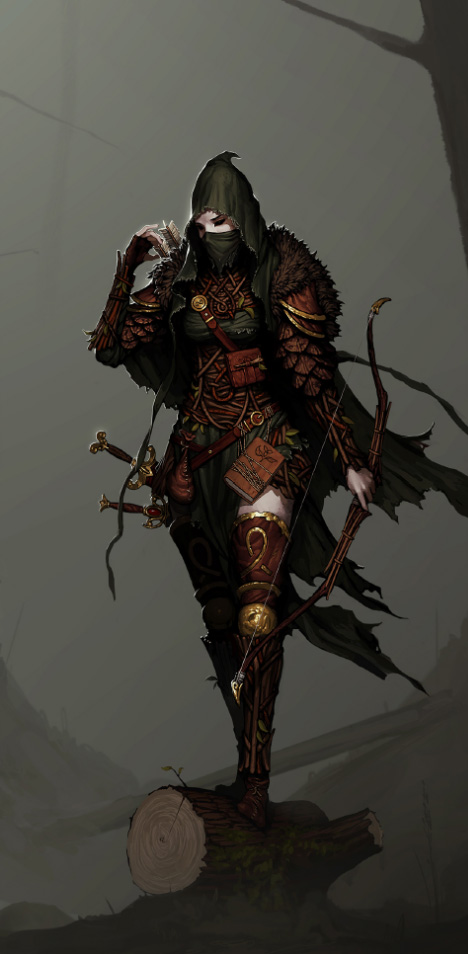
Chiar dacă vorbim de un titlu de acţiune cu minime accente pe mecanicile explicite ale jocului de roluri, VT este încununat de farmecul unui RPG clasic. Toate peripeţiile încep în hanul Luna Roşie, o clădire cu un aer cît pentru o mie de taverne virtuale. La început, hanul este înghesuit, bine baricadat, destul de îmbîcsit, cufundat în beznă şi bîntuit de muzică mohorîtă. Pe măsură ce jucătorii se strîng în hainele diverselor personaje, camerele lor se deschid, iar felul în care sunt prezentate spune extrem de multe despre fiecare caracter în parte şi despre atenţia oferită de producători detaliilor de ambianţă. Dincolo de lada cu echipament, la început nu se poate interacţiona decît cu o hartă a oraşului ce permite selectarea misiunilor. Însă, pe măsură ce victoriile se acumulează, hanul începe să se schimbe. Capătă nişte funcţii noi, devine mai luminos şi mai aerisit, animat de o coloană sonoră mai bogată, cu muzică pentru toate stările de spirit, şi înfrumuseţat de trofeele cucerite. E păcat că atmosfera de la început nu se poate revizita, dar pentru cei pasionaţi de colecţionat trofee sunt o mulţime de lucruri de făcut, de la detalii cosmetice pentru han sau pagini de introducere în universul WHF şi pînă la seria de provocări specifice misiunilor. Obţinerea celor din urmă se întinde pe tot spectrul de dificultate, de la încercări lejere chiar şi cu ochii închişi pînă la bătăile clopotelor şobolăneşti vărsate-n lacrimi.
VT are două moduri de joc şi e bine să trecem repede peste cel mai puţin inspirat. Modul Last Stand cuprinde numai două hărţi: o piaţă reutilizată din aventura principală și respectiv o fortăreaţă în munţi, pe marginea unei cascade, ambele fiind sub asediu. Obiectivul aici ţine strict de supravieţuire o vreme cît mai îndelungată împotriva unor valuri de şobolani tot mai numeroase şi mai diabolic organizate. Numai o mînă de oameni din întreaga comunitate a dus acest mod la capăt, epuizînd recompensele simbolice oferite, și asta din cîteva motive. Toată tevatura ţine vreo trei-patru ore, este în mare parte extrem de plictisitoare şi plină de timpi morţi în care echipa ţine cu dinţi şi gheare de cea mai bună poziţie de pe hartă şi bubuie tot ce se apropie. Creşterile bruşte de dificultate, ce vin cu o anumită cadenţă, sunt decalate de intervale lungi în care nu se întîmplă mare lucru antrenant. Mai mult, aceşti timpi anoşti nu prea pot fi săriţi, iar practic la fiecare tentativă provocarea trebuie luată de la capăt, îndurînd zeci de valuri plicticoase pînă ca lucrurile să prindă savoare. În al doilea rînd, recompensele materiale nu-şi merită timpul, modul Adventure oferind de cele mai multe ori o alternativă mai interesantă şi mai rapidă pentru obţinerea lucrurilor dorite.
Aventura originală din VT se desfăşoară în, dedesuptul şi prin împrejurimile lui Übersreik. Ea urmăreşte eforturile eroilor de a anihila planurile şobolanilor într-o serie de misiuni fără prea mare legătură sau însemnatate în lungul unui fir narativ. Prima misiune, una dintre cele mai reuşite de altfel, prezintă chintesenţa universului WHF. Eroii trebuie să-şi croiască drum prin oraşul copleşit de rozătoare şi să dea alarma la Cornul lui Magnus. E vorba de o ditai goarna scobită din craniul unui demon al Haosului, atît de masivă încît îndoaie turnul pe care stă cocoţată şi are un vuiet de saltă tot Reiklandul din pături. Mai departe, eroii au trasate sarcini de toate gradele: adunat provizii, sprijinit miliţiile asediate, sabotat planurile mişeilor şi aşa mai departe. Cele treisprezece misiuni se împart în mod aproape egal în două categorii: unele cu provocări mai mici și uneori o structură neliniară, gîndite pentru a fi terminate rapid, respectiv misiuni mai lungi ce prezintă riscuri mai mari dar şi posibilitatea unor recompense pe măsură. Ulterior, misiunile originale au mai fost completate cu două adiţii: un nivel secret, gîndit ca o provocare pentru cei mai înverşunaţi jucători şi un epilog care să închidă întregul periplu, legînd puntea spre Vermintide II (VT2).
Și-au vînat un șobolan, Kurnous să-nălțăm!
Dincolo de asta, producătorii au furnizat sub formă de DLC încă zece misiuni. Acestea sunt repartizate în patru pachete inspirate în general din campanii datînd din vremurile cînd WHF intra pe făgaşul pen & paper. Deşi în cadrul lor se petrece cam acelaşi lucru în materie de acțiune, ele oferă o schimbare de decor extrem de variată şi provocări mai interesante decît campania originală, plus ceva armament unic. În Drachenfels, eroii pătrund într-un castel bîntuit, cocoţat stingher între piscuri golaşe. Karak Azgaraz se petrece în principal pe meterezele înzăpezite ale unei fortăreţe piticeşti. Strömdorf prezintă un cătun nelegiuit, lovit de mama nenorocului, iar în fine, Death on the Reik este constituit dintr-o goană nebună pe malurile și curenții marelui fluviu. Multe dintre aceste misiuni suferă de aceeași problemă a lipsei unui fir narativ mai amplu care să le lege obiectivele. Dincolo de plăcerea jocului, ajungem să ne întrebăm ce rost are să ne punem pielea la bătaie în cel mai crunt hal pentru un artefact pînă la urmă lipsit de menire, sau ca să încurcăm planuri ce nu au nicio însemnătate. Per total însă, este evidentă diferenţa de calitate în favoarea misiunilor din aceste pachete, precum şi creşterea încrederii producătorilor în jocul lor și maturizarea prezentării. Ar trebui subliniat că în ultimele două pachete este vizibil totuși efortul închegării unui fir narativ mai interesant. Asta pentru că în timpul în care se lucra la ele deja era dezvoltat și VT2, iar acele misiuni îi servesc drept un preludiu extins.
Uneori e foarte limpede că VT a fost construit de o echipă restrînsă cu puţine resurse la dispoziţie. E suficient să încercăm să numărăm de cîte ori se repetă exact acelaşi bolovan pe cuprinsul Reiklandului. Cu toate astea, susţinut de o configuraţie suficient de puternică, VT încă rămîne extrem de frumos chiar şi la mai bine de cinci ani după lansare. Sunt greu de găsit secţiuni de hărţi făcute în grabă sau uitate într-un grad rudimentar de finisare. Din contră, în general decorurile sunt lucrate cu atenţie la detalii, îmbibate cu atmosferă, tușate în umbre vîscoase şi culori calde, iar uneori priveliştea e de-a dreptul impresionantă, împrumutînd elemente şi locaţii exotice din repertoriul universului WHF. Fie că păşim pe străzile pustii ale lui Übersreik sau pe sub arborii Reikwaldului la ceas de noapte, cînd susură vîntul în frunze iar radianţa lui Morrslieb pătrunde printre ramuri. Sau chiar cînd călcăm prin catacombele ce răsună cu un tînguit molcom. De fapt, fără prezenţa verminei şi mîrîielile aventurierilor, catacombele s-ar apropia destul de mult de sigiliul Thief pentru excelenţă în redarea sentimentului de însingurare şi al paşilor pe lespezi străvechi. E adevărat că în ansamblu jocului nu i-ar fi stricat ceva mai mult întuneric; atunci cînd tenebrele cad totuşi, experienţa devine foarte apăsătoare. Să spunem numai că FS au surprins extrem bine angoasa unei plimbări prin tărîmul lui Morr: mult sub pămînt, numai cu o făclie slabă care să mai alunge bezna, iar tot întunericul freamătă cu chiţăieli şi ochişori roşii. Adîncurile fără lumină nu sunt niciodată o experiență plăcută sau comodă, dezorientarea şi paranoia fiind resimțite chiar şi de către cei care le-au înfruntat de multe ori.
Aha! Right in the dongliz! - schadenfreude piticesc
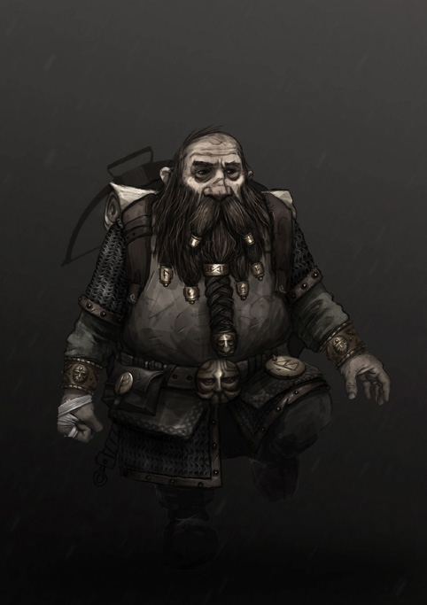
La o aventură în Vermintide pot porni pînă la patru jucători. În caz că nu există parteneri, locurile vacante sunt suplinite de boți. Nivelul de dificultate are cinci trepte. Pe Easy inamicii sunt lenți și destul de pasivi, lovesc slab și cad dintr-un strănut, iar ritmul este unul molcom. Jocul începe cu adevărat abia pe Cataclysm, unde toți șobolanii atacă frenetic, sunt rezistenți și pot răpune un erou din numai cîteva lovituri, iar cadența în care se desfășoară evenimentele este una precipitată. Scopul eroilor este întotdeauna să parcurgă harta, să rezolve o serie de obiective specifice și să evadeze în diligența condusă de Olesya. O aventură se întinde în general între zece și treizeci de minute, iar problema morții are parte de o soluție acceptabilă. Greu de crezut că șobolanii ar lua prizoneri, dar în caz că un erou este „ucis”, acesta se va trezi după treizeci de secunde legat fedeleș undeva înaintea grupului, la o distanță rezonabilă pentru a fi recuperat. Cu alte cuvinte, atîta vreme cît măcar un aventurier rămîne în viață, încă există speranțe pentru a redresa situația. Obstacolul imediat este dat de distribuția aleatoare de șobolani cafenii și negri care populează harta. Peste acesta, jocul evaluează din spatele cortinei tensiunea la care este supus grupul și decide ce alte belele să îi mai arunce pe cap: o haită de șobolani cafenii, o ambuscadă sau hoardă de sclavi, un grup mic de șobolani specialiști. Mai departe, diverse puncte ale hărții pot genera un obstacol mai dur, după voia norocului. La trecerea de aceste puncte se poate să nu se întîmple nimic, poate fi generată o patrulă de șobolani negri sau poate să fie anunțată venirea șobolanului uriaș. Acest sistem conduce la o experiență emergentă de joc și face ca o hartă parcursă de multe ori să rămînă în bună măsură o aventură proaspătă. În fine, fiecare hartă are parte și de cîteva așa-numite evenimente, anume segmente unde eroii au de trecut un hop în timp ce amenințările urmează un scenariu prestabilit, ale cărui reguli pot fi memorate și într-o măsură anticipate.
Răspunul la toate provocările de mai sus este dat de cooperare și tactică, iar una dintre primele deprinderi utile este alegerea terenului potrivit pentru a desfășura o luptă. Nu vrem să ținem de o poziție unde putem fi înconjurați de hoardă, dar în același timp nici nu dorim să luptăm într-o fundătură unde putem fi împresurați de șobolani negri, de rafale de Ratling sau de un glob otrăvitor. O deprindere ceva mai tehnică ține de mișcare, în special de manipularea geometriei nivelului pentru a crea distanță. Șobolanii aleargă mai repede ca eroii, dar toți au animații specifice pentru urcatul sau coborîtul de pe obstacole. Astfel, diferențe de elevație sau piese de mobilier pot fi folosite pentru a-i lăsa în urmă și a recîștiga inițiativa în luptă. Simțurile care necesită cea mai multă experiență sunt cele care țin de străbaterea hărții și de coordonare. Jucătorii cu experiență capătă o afinitate pentru a anticipa mutările din culise și înțeleg cînd este momentul pentru a parcurge un segment de hartă pe o rută sigură sau cînd ar fi mai bine ca grupul să se fortifice în jurul unei poziții. Nu de alta, dar nu vrem să trecem peste un punct despre care știm din experiență că poate declanșa întîlnirea cu șobolanul uriaș, iar simultan cu acesta să fim loviți de o hoardă și de trei specialiști. Jocul are cel mai mult farmec atunci cînd este trăit împreună cu un grup bine coordonat, unde fiecare își înțelege rolul. Eroii pot fi măturați rapid dacă toți atacă bezmetic și sunt concentrați într-o singură direcție, dar lucrurile merg mult mai lin atunci cînd își repartizează sarcinile și lucrează împreună împotriva tuturor amenințărilor. Această repartizare ține pe de-o parte de experiența de joc, dar și de echipamentul ales de fiecare aventurier.
Într-o misiune pot fi aduse două arme, una pentru lupta de contact și o armă de foc. După agoniseala fiecăruia, un erou poate echipa și pînă la trei talismane avînd efecte unice. Unele oferă protecție față de anumite tipuri de atacuri, altele sporesc utilitatea proviziilor din hărți sau îmbunătățesc abilități individuale. Poate cel mai interesant talisman este cel care adună sănătatea tuturor purtătorilor într-o rezervă comună. În această situație, toate loviturile încasate au efectul distribuit în mod egal între purtători, la fel cum se petrece și pentru orice formă de vindecare aplicată. Astfel, un grup bine organizat poate deveni de neoprit, cum la fel de bine se poate întîmpla ca din greșeala unui jucător toți patru să fie puși la pămînt simultan. Mai departe, pe lîngă arme și talismane, aventurierii pot culege diverse provizii din drum. În general acestea sunt distribuite aleator, avînd o probabilitate să răsară în diverse locuri funcție de dificultatea jucată, dar întotdeauna cîteva vor fi garantate. Slotul de inventar considerat uzual este dedicat obiectelor de prim ajutor care poartă turturica Shallyei: fie poțiuni care regenerează o cantitate fixă de puncte de viață, fie kituri care vindecă proporțional cu numărul de puncte lipsă. Cele din urmă au nevoie de cîteva secunde pentru a fi aplicate, dar pot fi utilizate pe camarazi și uneori pot avea un efect mai puternic. Slotul magic este pentru poțiuni fermecate care aplică, după sortiment, un bonus masiv la puterea de atac, respectiv la viteza de atac și deplasare. O astfel de poțiune are o durată de numai zece secunde, dar în conjucție cu talismanul care îi distribuie efectul către aliați rezultă că dintr-o înghițitură întregul grup poate trivializa cea mai cruntă situație. Slotul ingineresc este pentru bombe care vin și ele în două variante. Cele cu fragmentare spulberă pur și simplu cam tot ce este prins în raza exploziei și năucesc chiar și șobolanul uriaș, iar cele incendiare acoperă o suprafață mare în ulei aprins.
The beacon of Amon Dîn is lit. Oh wait.
Lupta de contact în VT se desfășoară după reguli foarte simple și redă extrem de bine atît senzația de mînuire a armamentului cît și impactul loviturilor. Armele din joc sunt clasificate după culoare în funcție de raritatea lor. Puterea atacurilor este stabilită de raritate și crește de la arme abundente (albe) și comune (verzi), la cele rare (albastre) și într-un final exotice (portocalii). Mai mult, începînd cu armele verzi echipamentului îi pot fi aplicate proprietăți ce îi îmbunătățesc funcționalitatea, cîte una pentru fiecare nivel de raritate pînă la cel mult trei. Armele veteranilor, avînd cel mai înalt nivel de raritate și culoarea roșie, se remarcă prin faptul că posedă combinații unice de proprietăți, deși de regulă nu sunt la fel de bune ca o armă portocalie bine temperată. În orice caz, indiferent de raritate, fiecare armă de contact are o măsură de stabilitate cuantificată printr-un număr de scutulețe. Aceste scutulețe pot fi folosite fie pentru a bloca atacurile șobolanilor, fie pentru a împinge în ei și a crea spațiu. Scutulețele se regenerează pasiv, dar dacă rămînem fără în mijlocul luptei nu vom mai putea împinge, iar dacă încercăm să blocăm un atac suplimentar, garda ne va fi sfărîmată. Pierderea gărzii este urmată de vreo trei secunde în care eroul este dezechilibrat, timp în care cu siguranță va fi pus la pămînt dacă este înconjurat de inamici sau încasează halebarda unui șobolan negru. Armele au totodată și o măsură de mobilitate, în sensul că fiecare permite executarea unor eschive, numărul și distanța efectivă a acestora variind de la o armă la alta în moduri ușor de intuit: o săbiuță ușoară va fi mult mai mobilă decît un baros imens. Precum în cazul stabilității, posibilitatea de a executa aceste manevre se regenerează pasiv. Eschiva este poate mai cea puternică tehnică defensivă din repertoriul oricărui erou, căci în fereastra ei de execuție atacurile inamicilor nu îl urmăresc.
Cînd vine vorba de abilitățile ofensive, armele au două tipuri de atacuri: un click scurt va executa un atac ușor, iar menținerea apăsării va încărca un atac greu, a cărui execuție se poate întîrzia pînă la o limită pentru a acoperi distanța față de țintă sau pentru a regla arcul loviturii. Utilitatea celor două variază în funcție de armă și context, singura regulă universal valabilă fiind că atacurile ușoare sunt mai rapide decît cele grele. O bună parte din arta lui VT ține de înlănțuirea tuturor acestor tehnici, anume de a ști cum să împletim atacuri ușoare și grele cu eschive, cu o gardă sau împingere executată strategic, astfel încît să păstrăm inițiativa în luptă și să ne maximizăm performanța lovind cît mai mult la cap. Rezultatul final este un sistem de luptă extrem de aerisit și satisfăcător, ce răsplătește exercițiul și stăpînirea armei alese. Atît loviturile primite cît și cele încasate poartă mult impuls, iar șobolanii au mereu un răspuns adecvat la atacuri. Se chircesc sau tresar sub o împungere sau tăietură de sabie, și zboară cît colo sub impactul unui baros, fiind făcuți una cu pămîntul și avînd nevoie de secunde bune ca să se ridice, dacă mai sunt în stare. Cei în armură rămîn însă neperturbați de armele ușoare, care nu reușesc să le smulgă mai mult de scîntei de pe cuirase. Poate e un detaliu de nișă, dar rar se resimte într-un joc atîta greutate ca atunci cînd o halebardă se prăvălește pe un scut, senzația fiind amplificată și de felul excelent în care este redat efectul sonor. Mai că simțim efortul în braț.
Chiar dacă accentul este pus pe lupta de contact, stăpînirea armelor de foc este o altă deprindere esențială, deși mai limitată în scop. Puține au capacitatea și funcționalitatea de a transforma jocul într-un FPS. De regulă, rolurile lor se împart fie între a spulbera un număr mare de inamici la momente grele, fie de a elimina ținte solitare, dar extrem de periculoase. Tot ce ține de realizarea, execuția și mînuirea lor produce satisfacție, fie din măiestria unei tehnici stăpînite pentru a țintui capetele șobolanilor de pereți, fie din sunetul plin al unei camere reîncărcate sau al unui proiectil de plumb scăpărat cu ură. Evident că aceste arme mențin aspectele legate de mobilitate, dar nu și cele de gardă, avînd în schimb două moduri de tragere ce diferă de la un caz la altul. Unele pot trece de la foc manual în regim automat, altele ne permit să țintim pentru o precizie ridicată la distanțe mari, să creștem tensiunea înainte de lansarea unui proiectil și așa mai departe. Un detaliu drăguț este legat de faptul că trebuie să fim conștienți de zgomotul produs de armele de foc. Sigur că arbalete sau arcuri sunt foarte silențioase și permit eliminări strategice fără mare tărăboi, dar tunetul unei puști va stîrni furia tuturor văgăunilor din împrejurimi.
Roar all you like, monster. The fire takes you now! - găina bătrînă face cenușa bună
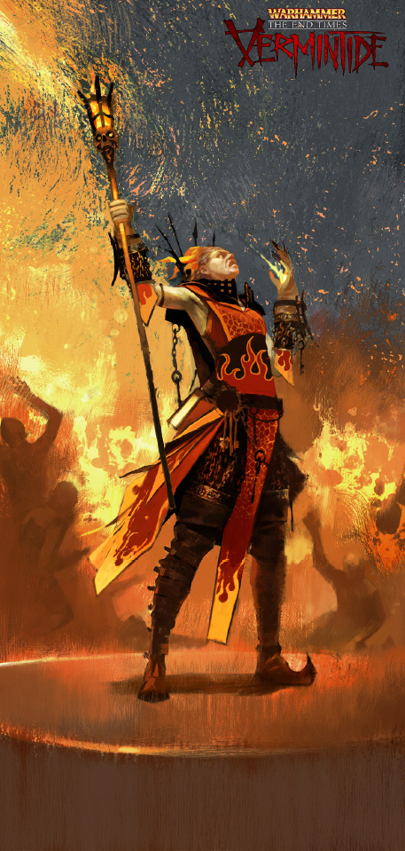
Merită să trecem în revistă opțiunile fiecărui erou pentru a înțelege multitudinea de nuanțe prezente în joc și posibilitatea de a îmbogăți experiența prin îmbunătățirea deprinderilor noastre. Arma emblematică a inchizitorului este rapiera, din păcate realizarea ei în VT fiind destul de dezamăgitoare. Are o gardă foarte rapidă, dat altfel atacurile sunt destul de lente, slabe și lovesc puține ținte. Probabil că s-a dorit contrabalansarea faptului că inchizitorul mînuiește un pistol în cealaltă mînă, dar măsurile sunt nejustificate dat fiind că pistolul este la rîndul lui foarte limitat în muniție, destul de slab și cam greu de mînuit. În caz că rapiera nemulțumește, inchizitorul poate alege o secure. Foarte bună de altfel pentru a străpunge armura, dar nu tocmai potrivită pentru a stăvili hoardele. Cealaltă alternativă este un zweihander conceput pentru a fi exact opusul securii: are dificultăți mari în fața șobolanilor negri, dar deschide pîrtia prin mulțime. Alegerea care face cam toate celelalte arme redundante prin utilitate și eficiență este maceta; o armă rapidă, cu o tehnică de execuție ce ușurează prinderea beregatelor, lucru important avînd în vedere că poate decapita șobolani dintr-o singură lovitură. E adevărat că are garda slabă, dar e un incovenient care poate fi rezolvat aplicîndu-i proprietăți potrivite. În ceea ce privește armele de foc, inchizitorul are acces la două tipuri de arbalete și pistoale. Arbaleta standard este cam cea mai versatilă alegere: silențioasă, capabilă să străpungă șobolani în număr mare și să elimine mai orice amenințare cu un proiectil țintit la cap. Varianta mai grea este arbaleta cu repetiție, ce per total este mai puțin eficientă cu muniția, dar poate răpune șobolanul uriaș extrem de repede sub un tir susținut. Brîul de pistoale ar trebui să fie o altă alegere consacrată, dar din nou ne lovim de decizii discutabile de concepție. Nu ajută prea mult că putem descărca în viteză zeci de proiectile de plumb dacă acestea sunt foarte imprecise și au efecte modeste. Prind cu greu capete, abia penetrează armura și nu pot străpunge nici măcar prin sclavi fără o proprietate dedicată. Astfel, e greu de găsit o nișă care să-i justifice uzul. Ultima variantă este pistolul cu repetiție, o armă foarte elegantă al cărei butoi poate fi golit fie secvențial cînd vrem să eliminăm ținte îndepărtate, fie dintr-un foc letal pe distanțe scurte, dar ale cărui efecte scad rapid din cauza dispersiei gloanțelor.
Elfoaica are avantajul armelor cu mobilitate extremă. Este totodată singura din grup care poate mînui două simultan, dacă dorește. Astfel, ea poate opta pentru o sabie sau pentru diverse împerecheri de săbii și pumnale ce-i permit să-și ajusteze profilul împotriva țintelor solitare sau grupurilor mari de șobolani. Altă alegere este o seceră imensă, excelentă pentru înjumătățit șobolanii negri. Are acces la două arcuri, cel scurt și cel lung, ce la rîndul lor se pot specializa mai departe cu două tipuri de săgeți. Arcul scurt cu săgeți obișnuite vine cu o tolbă foarte grea și cu un tir susținut, pe cînd tolba cu săgeți otrăvite este mai ușoară, dar acestea explodează la impact și-și împrăștie amestecul sub forma unui nor. Arcul lung cu săgeți uzuale este bun pentru a străpungerea armurii și eliminarea rapidă a țintelor periculoase, iar cea mai interesantă opțiune este cea a săgeților fermecate, care-și caută singure prada. Sunt mai puține la număr și per total mai slabe, dar inestimabile atunci cînd au capacitatea de a atinge o țintă ascunsă de obstacole sau acoperită de alți șobolani.
Piticul este specialist în ciocane și securi de toate mărimile, de la cele mici concepute pentru viteză de execuție și mobilitate, la variante cu scut care sacrifică mobilitatea pentru dîrzenie. Variantele grele sunt făcute pentru a mătura puhoaie, a face țăndări armura sau pentru a toca mărunt șobolanul uriaș. Există și un tîrnăcop ce într-o măsură reușește să împletească loviturile largi ale barosului cu forța de străpungere a securii. Armele de foc sunt toate la nivelul de calitate așteptat din partea făurarilor pitici. Are acces la o arbaletă, la o pușcă ce poate împrăștia alice într-un număr mare de ținte și o armă de vînătoare pentru eliminat șobolani negri și specialiști. Culmea ingineriei piticești este dată de o pereche de pistoale în asemănarea unor capete de balaur ce spumegă flăcări fie sub formă de mici proiectile, fie ca un con ce poate incinera valuri întregi de căpiați. În bună măsură similar cu piticul, mercenarul imperial poate mînui buzgudane și săbii după același tipar, opțiunile lui fiind mai degrabă înspre controlul și eliminarea hoardelor decît răpunerea țintelor mari. Cea mai interesată armă este probabil o sabie de călău destul de ineficientă cînd vine vorba de lovituri în plin, dar cu o tehnică ce, odată stăpînită, permite retezarea multor capete dintr-o lovitură. Armele sale de foc sunt un tun cu alice pentru bubuit hoardele, respectiv o pușcă de vînătoare pentru ținte îndepărtate. Are și o bijuterie imperială sub forma unei mitraliere cu țevi rotative, potrivită mai oricărei situații.
It ain't a party until someone's on fire.
Cel mai deosebit personaj prin specificul mecanicilor de luptă este vrăjitoarea. Chestiunile noi nu se regăsesc în armele de contact, unde are alegeri modeste: săbii, buzdugane și pumnale, unele descîntate cu foc. Însă pentru lupta la distanță ea nu posedă arme convenționale, ci bastoane care-i permit evocarea diverselor aspecte ale lui Aqshy. Spre exemplu, unul îi permite să acopere hoarde într-o ploaie de scîntei sau să conjure o suliță care, asemenea săgeților fermecate ale lui Kerillian, poate vîna ținte fără o linie vizuală directă. Deși are nevoie de cîteva secunde de încărcare, sulița este absolut fioroasă, putînd să străpungă și rîndurile șobolanilor negri dacă sunt încolonați. Alte două bastoane permit declanșarea unor veritable conflagrații, fie sub forma unor globuri de foc aruncate din mîini, fie ca fîntîni incadescente ce erup din sol. Ele oferă senzația mînuirii unor furtuni de flăcări care înghit cîmpul vizual, fiind o reprezentare potrivită a personalității și obsesiilor Siennei. Flames around you, flames, nothing but flames burning your flesh, după cum i se șoptește unui hoț în alt joc, în liniștea criptelor. Poate cel mai greu de măiestrit toiag, dar și cel mai versatil, este cel care totodată pare destul de anemic. Atacul primar declanșează o explozie de rază scurtă, bună pentru năucit șobolanii care vin prea aproape. În modul secundar, arma permite canalizarea unui fascicul pe o țintă. Pare să nu fie mare lucru la început, dar în cîteva secunde de concentrare năzdrăvănia devine raza morții. Mai mult, raza permite oricînd descărcarea exploziei primare pe respectivul șobolan, iar dacă reușim să-i prindem capul în momentul declanșării, atunci rezultatul este o vaporizare imediată de la umeri în sus.
Felul în care Sienna își gestionează abilitățile reprezintă o interpretare originală a magiei din WHF. La fiecare invocare, vrăjitoarea rămîne încărcată cu o urmă reziduală de energie. O sarcină slabă nu are niciun efect, dar pe măsură ce se acumulează începe să-i încetinească atît viteza de deplasare cît și atacurile. Dacă trece de pragul critic, Sienna este pusă la pămînt de o explozie care va lovi și toți ghinioniștii aflați în jurul ei. Sarcina se pierde pasiv, dar procesul este lent; el poate fi accelerat în mod activ printr-un ritual de răcire, iar dacă avem prea multă sarcină de disipat, pierderea ei va costa puncte de viață. Astfel, într-o luptă susținută vrăjitoarea ajunge să sacrifice bara de sănătate pentru a-și alimenta atacurile, o idee foarte interesantă. Nu prea are însă impactul care ar putea fi sugerat inițial, căci avem multe unelte la dispoziție pentru a diminua sarcina. De exemplu, orice toiag poate fi înscris cu o rună ce dublează rata de răcire și înjumătățește pierderea punctelor viață. Mai mult, o rună de împămîntare poate fi înscrisă pe arma de contact, oferindu-i o șansă ridicată ca atunci cînd lovim inamici o parte din sarcină să fie transferată asupra lor. Plus că dacă au proprietățile potrivite, aceste arme pot oricum regenera din atacuri mult mai multă viață decît este pierdută prin prin răcire.
I wish you were an ale… - metehne și aleanuri, în Vremurile de Sfîrșit
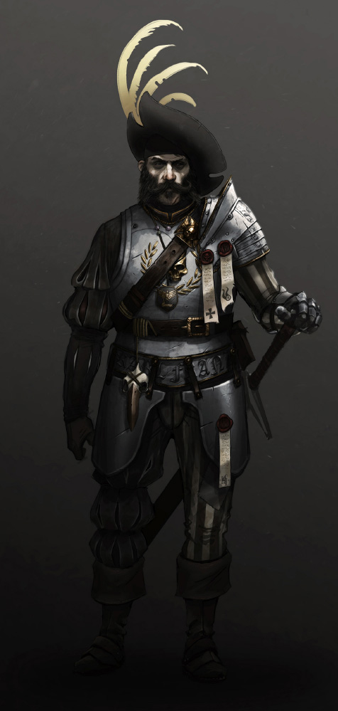
Progresia în VT este în mare parte una intrinsecă. Partea jocului de rol pînă la urmă se rezumă la cum ne stăpînim uneltele și cît de bine înțelegem mecanicile simple, dar care uneori sunt prezentate destul de obscur. A fost de altfel o decizie deliberată a producătorilor, care nu au dorit să-i imprime jucătorului sentimentul că ar fi necesară o abordare de tip min-max, preferînd mai degrabă o experiență imersivă. Partea de dezvoltare extrinsecă se reduce la obținerea echipamentului dorit, și aici lovește o mahmureală grea, răsărită din întunericul cramei cu idei proaste. Dacă eroii scapă teferi dintr-o aventură, se întorc la han, ciocnesc cîteva pahare și-și riscă ultimele sorți cu oasele lui Ranald, zeul nopții avînd simpatie pentru hoți și pisici negre, pentru spirala descendentă a jocurilor de noroc, dar reprezentînd totodată și un aspect al libertății. Pe oasele lui este pusă la bătaie o listă de opt piese generate aleator. Ele pot fi arme pentru oricare erou, talismane sau scufii cu rol cosmetic. Avem foarte puține pîrghii pentru a influența oferta, singurul lucru care se poate controla mereu fiind distribuția de raritate în listă, funcție de dificultate.
Pe Easy, recompensele sunt împărțite aproape egal în piese albe la bază și verzi spre vîrf, cu una albastră în capul listei. Pe Cataclysm sunt cîteva piese albastre la bază, restul sunt portocalii, iar în cap este garantat un obiect roșu, uneori chiar două pe ultimele poziții dacă avem norocul haiducilor și nu le-am colecționat deja pe toate, aceste piese fiind unicate. Pentru a-și căpăta răsplata, eroii au la îndemînă șapte zaruri cu șase fețe, fiecare avînd numai două fețe bune. Dacă ratăm complet aruncarea lor, ne alegem cu piesa de la bază, iar pentru fiecare reușită mai urcăm o poziție pe listă. Dintr-un calcul simplu rezultă că șansa să dăm un 7⁄7 este fulminanta 1⁄2187. Cum o aventură terminată cu succes durează în medie vreo douăzeci de minute, reiese că măcar o dată cam la vreo șapte sute de ore de joc unde am avut victorii fără cusur am putea da marea lovitură. Sigur, pronosticul nu e cu nimic mai bun dacă se întîmplă să ne dorim oricare altă piesă. Suntem complet la mila destinului, piesa trebuind mai întîi să fie generată în listă, iar apoi fiind necesar să nimerim aruncarea potrivită la zaruri.
Soluția pentru a obține ceva drăguț într-un timp rezonabil constă în înlocuirea zarurilor cu unele mai bune, și aici bătăile de cap se amplifică. Pînă la două zaruri obișnuite se pot schimba cu unele blestemate, ce au cîte trei fețe bune. Suntem din nou însă întru totul la cheremul șansei, căci aceste zaruri au o probabilitate mică să răsară prin hărți fie în cuferele ce ocazional ascund provizii, fie obținute în urma răpunerii singurului șobolan care nu încearcă să ne omoare în mod direct. Șobolanul cu desagă este o prezență rară, putînd să-și facă apariția în preajma locurilor unde riscăm contactul cu o patrulă sau un uriaș. Este fricos și uite de picior, gonind ca din pușcă dacă un erou se apropie prea mult. Totodată, sacul pe care-l cară în spate îl ecranează de proiectile, și în ciuda greutății purtate este un maestru al eschivelor și fentelor. E greu de nimerit, dar presupunînd că cineva reușește să fugă după el fără să fie ucis de prietenii lui chițăitori, atunci din nou recompensa poate oscila foarte mult. Desaga poate să fie plină de bunătăți (provizii de orice fel și zarurile respective), mai modestă cu una sau cu alta, sau chiar complet goală. Mai departe, hărțile lungi au obiceiul să conțină pînă la trei tomuri ascunse în diverse locuri. Odată ridicat, tomul va ocupa slotul uzual pentru jucătorul respectiv, dar poate fi înlocuit oricînd cu provizii medicale găsite pe drum sau poate fi recuperat de un camarad dacă acel jucător este răpus. Fiecare tom aflat în posesia grupului la obținerea victoriei contribuie cu un zar avînd patru fețe bune.
{kind=link}
{kind=link}
Hărțile unde sunt prezente tomuri conțin mereu și culegeri pline de magii șobolănești, în număr de cel mult două. Aceste culegeri ocupă sloturile magice și sunt mult mai drăcoase în natură decît tomurile. O culegere foarte fi aruncată oricînd, dar asta presupune distrugerea ei deliberată. Similar, dacă eroul ce o poartă este răpus, ea e definitiv pierdută. Mai mult, fiecare culegere aflată în posesia noastră va arunca asupra întregului grup Blestemul Șobolanului, anume o bună parte din punctele de viață ale tuturor eroilor sunt mîncate de blestem cîtă vreme năpasta e purtată. Cu două culegeri ridicate, toți aventurierii rămîn în uz efectiv cu numai o treime din punctele lor de viață, fapt ce îngreunează considerabil misiunea. Sigur că se poate face ceva în acest sens, anume se poate echipa un talisman ce mai domolește din puterea blestemului. Problema e că acest talisman vine doar în varianta exotică, adică poate fi obținut numai cu mult noroc la zaruri și biruind o misiune la dificultate mare. În orice caz, pentru fiecare culegere furată din ghearele șobolanilor suntem recompensați cu un zar avînd toate cele șase fețe bune. Presupunînd că am maximizat calitatea zarurilor, șansele să dăm lovitura s-au dus la mult mai decenta valoare 2⁄27, ceea ce în medie tot înseamnă cîteva ore bune de joacă. Acesta și este de fapt mesajul de înțeles pentru cei care vor echipament drăguț în VT, anume că singura garanție pentru a-l obține vine dedicînd foarte mult timp jocului.
Alt aspect ce trebuie subliniat este că în versiunile timpurii nu existau piese de culoare roșie, iar obținerea armei dorite la raritate portocalie în general nu însemna de fapt nimic, asta pentru că inițial nu exista niciun fel de control asupra proprietăților nimerite. Fiecare armă are sute de combinații de proprietăți, multe complet nefezabile dacă nu oferă o formă de regenerare a punctelor de viață în urma atacurilor, deoarece fără aceasta jocul devine mult prea dificil. Mai mult, proprietățile însele de multe ori constau în efecte care se pot produce cu o probabilitate ce poate oscila mult. De exemplu, efectul de regenerare al cîtorva puncte de viață la executarea unui atac se poate produce de regulă cu o probabilitate între trei și zece procente pentru fiecare țintă lovită. Între sute de combinații inutile și mari șanse ca proprietățile dorite să vină cu procente mici atașate, rezultă din nou nevoia unui frecuș infernal ce ne întoarce la abordarea discutată mai devreme, anume că jucătorii ar fi trebuit să se descurce cu ce le-a venit la mînă în loc să vîneze piese perfecte.
Anyone else want to carry this thing?... No?... Typical.
Destul de repede s-a constatat că treaba asta nu merge, și treptat au fost concepute sisteme noi pentru gestionarea inventarului. Astfel, există o forjă avînd funcția principală de a topi în materii prime piesele de echipament care nu ne interesează. Aceste resurse au fost într-o fază folosite pentru a debloca proprietățile armelor și pentru a crește nivelul de raritate al echipamentului din dotare. Ulterior, a fost introdus și un altar unde resursele pot fi cheltuite pentru a genera arme noi, pentru a putea schimba seturile de proprietăți sau a modifica procentele atașate efectelor. Ultimele două funcții ar fi putut rezolva o bună parte din marile probleme ale felului în care jocul ne recompensează, asta dacă nu ar fi fost din nou implementate prost. După cum am spus, o armă de raritate portocalie are trei proprietăți, ce vin în cîteva sute de combinații prestabilite. Dacă dorim să schimbăm combinația la altar, costul de resurse este foarte ridicat relativ la încasările venite dintr-o victorie și rezultatul este complet aleator. Nu există opțiunea de a bloca una dintre proprietăți, dacă se întîmplă să ne-o dorim, și să putem lăsa la mîna sorții numai celelalte două pe subsetul de combinații rămase posibile. După cum e ghinionul fiecăruia, asta poate conduce la săptămîni sau luni de frecuș zilnic în care ne tot chinuim să strîngem cîteva resurse și să le jucăm la altar, poate-poate nimerim combinația dorită. Plus că jocul nu comunică niciodată ce combinații sunt imposibile, iar fără lista de combinații permise extrasă direct din codul sursă putem să ardem materialele complet aiurea. E adevărat că o combinație interesantă poate fi păstrată și putem face încercări pentru a nimeri ceva mai bun fără să pierdem ce avem deja, dar e mult prea puțin. Nici îmbunătățirea procentelor nu are parte de un tratament prea inteligent. Costul de resurse este și mai ridicat, și chiar dacă jocul nu este atît de crud încît să înlocuiască o valoare mare cu una mai mică, putem în continuare risipi zadarnic o cantitate aiuritoare de timp și efort ca să reușim să transformăm procentul în cel dorit. Un răspuns parțial a venit sub forma armelor roșii, unde nu trebuie decît să alegem între cele două seturi unice de combinații (o non-alegere de fapt, al doilea set a fost introdus pentru că primul în general e foarte prost) și apoi să deblocăm proprietățile, procentele aferente fiind automat maximizate.
Singura idee executată bine în toată această afacere este avizierul cu vînători de recompense. În fiecare zi sunt generate contracte noi la avizier, dintre care putem rezerva cîteva oricît timp dorim. Fiecare contract necesită atingerea unui anumit obiectiv pe o anumită hartă, la o dificultate mai mare sau egală cu un prag dat. Recompensele sunt fie binecuvîntări temporare aplicate eroului, fie materii prime necesare făurii echipamentului. Întotdeauna, câteva contracte vor oferi în plus și cîteo cheie, iar aceste chei pot fi folosite pentru a achiziționa piese aflate în oferta avizierului. În fiecare zi marfa se schimbă, acoperă orice raritate între verde și roșu și este de orice tip (arme, talismane, scufii). În funcție de tip și raritate, fiecare piesă necesită un anumit număr de chei, și tot ce avem de făcut e să rezervăm obiectul dorit, după care în măsura timpului nostru să încheiem contracte pînă cînd am depus suficiente chei încît să îl primim. Ca un obicei ce a avut mare prindere printre vînătorii de șobolani, a devenit tradiție ca în fiecare duminică să fie oferit și un contract suplimentar. Acesta necesită mereu birurea unei hărți pe Cataclysm, iar răsplata este foarte generoasă cu chei și materii prime.
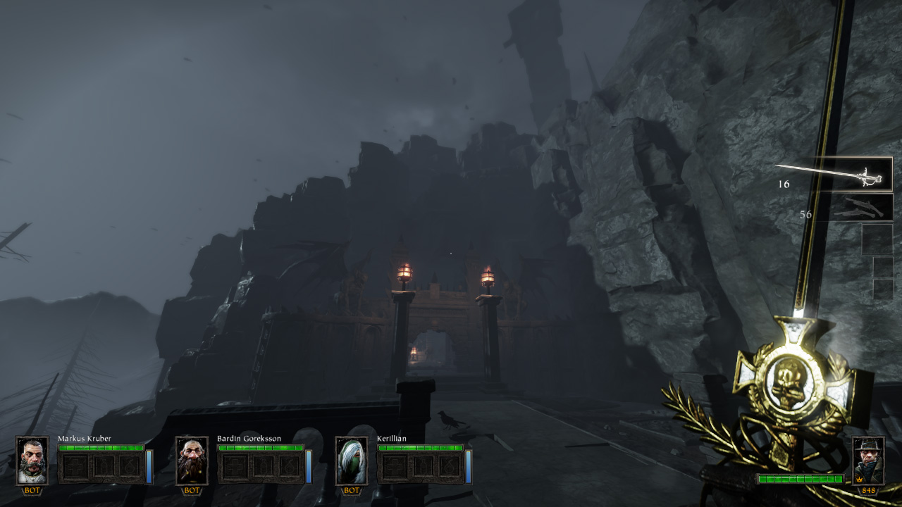
The fires of Übersreik were a signal… - semne rele anul are
La sfîrșit de tot, rămînem cu focul dogorind în vatră, cu Lohner mustăcind peste tejghea și cu elegia Lunii Roșii răsunînd în minte. Sau cu ecourile baladei Negustorul și purceaua, dacă-i vremea mohorîtă. Desigur, avem și o ultimă nedumerire. Imposibil de priceput cum într-un singur joc, una peste alta modest în dimensiuni, încap deopotrivă atîta atmosferă și atîtea idei concentrate în jurul dezvoltării abilităților personale, al cooperării și relațiilor firești, fără impunerea unor constrîngeri artificiale prea severe. Dacă-i vorba de magie, ar fi greu de zis din ce fel de culegere a fost invocată, dar în orice caz nu a fost un miracol înfăptuit peste noapte. Au fost necesari cîțiva ani de muncă susținută pentru ca VT să ajungă la stadiul din versiunea sa finală. A rămas nefinisat sub cîteva aspecte secundare, ce denotă poate că producătorii înșiși n-au înțeles inițial ce anume i-ar face pe jucători să revină. Anumite defecte și buguri destul de supărătoare ar fi stricat și astăzi experiența dacă n-ar fi fost efortul comunității de modderi. E impresionant că un joc avînd o atît de mică bază de fani dedicați a reușit să atragă suficient talent încît multe probleme să-i fie rezolvate nu numai în litera codului ci și în spirit, și e cam bizar că producătorii nu au tras învățăminte din acest efort. Poate că VT ar fi meritat ceva mai multă atenție, dar pentru ceea ce dorește să fie rămîne o experiență ca nici alta, pătrunsă de aerul de toamnă tîrzie pe care-l au acele jocuri irepetabile, ce ne exaltă spiritul. Merită să ne întrebăm cîte s-ar mai fi putut face dacă FS i-ar fi dedicat mai multe resurse. Pe lîngă timpul sacrificat dezvoltării variantei pentru console, la aproximativ un an și ceva după lansare deja se lucra asiduu la VT2, un joc mult mai mare și mai ambițios, care nu este cuprins de același farmec. Deși la această dată are la rîndul său cîțiva ani buni în spate, problemele au rămas și progresul a stagnat, producătorii fiind preocupați de transpunerea conceptului în universul 40K cîndva în viitorul mediu. Alți bani, altă distracție.
Va veni și vremea acestor jocuri, dar pînă atunci strîngem dinții și mînerul armei. Suntem prinși chiar în vîrful turnului, sub Cornul lui Magnus; am săltat Reiklandul din plăpumi, dar vuietul tocmai ne-a chemat în cap toți ticăloșii chițăitori din Übersreik. Din spate, prin gratiile unei ferestre, Morrslieb atîrnă ca un rău augur. Nu putem trage nădejde decît în vorbele piticului, care-și aduce aminte voios cum a pățit-o verișorul Okri chiar mai rău la Muntele Celor Opt Piscuri. Și în vorbele unui Victor Saltzpyre ce-și oblojește rănile în cele cîteva momente de liniște, înaintea asaltului șobolanilor: Holy Sigmar, bless this ravaged body! ■
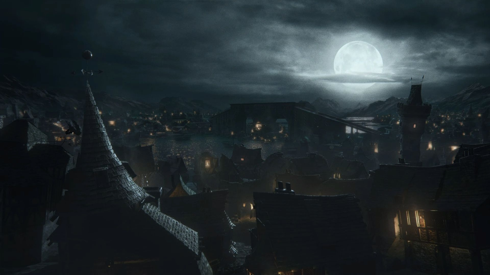
Galerie imagini